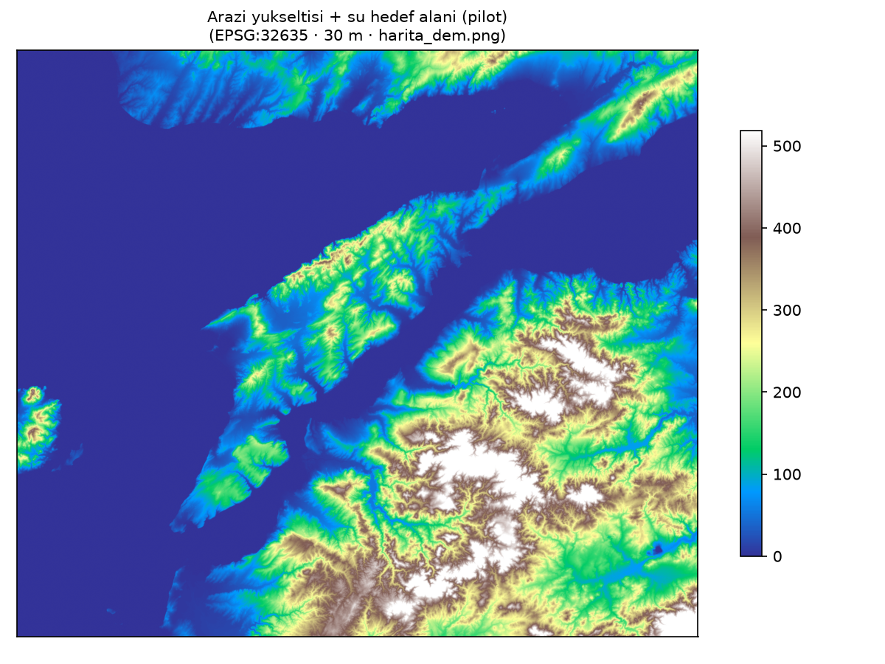
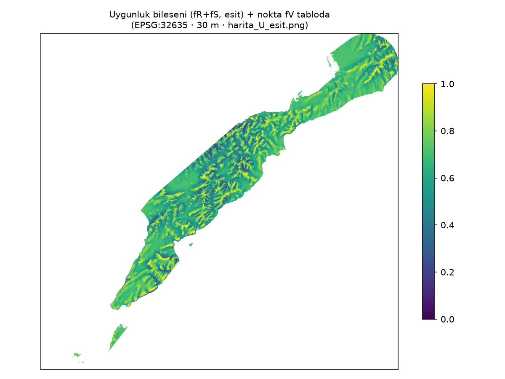
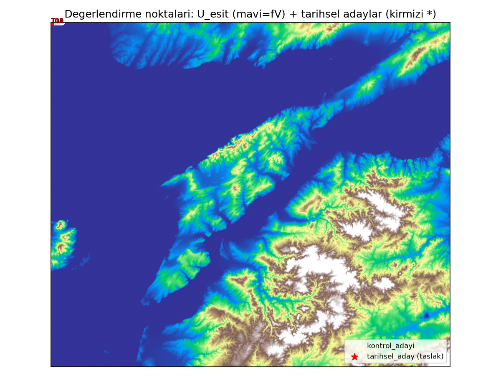
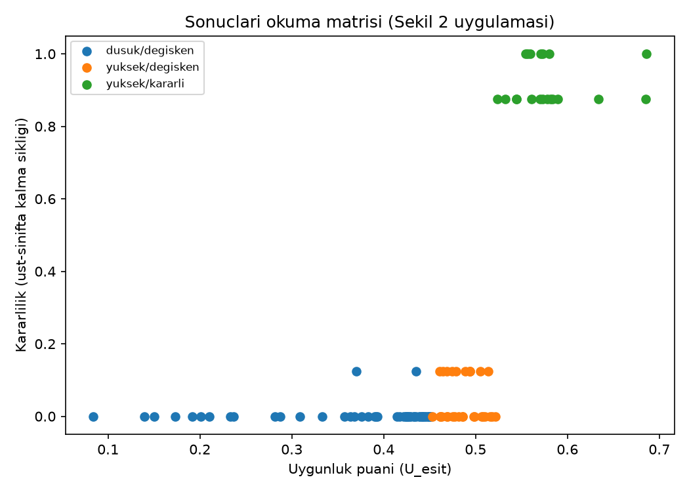

Yöntem önerisinin uygulaması. İlke: önce tarihsel bağlam, sonra model, ardından bağımsız sınama.
| ID | Ad | fV | U | Karar. | Sınıf |
|---|---|---|---|---|---|
| T01 | Namazgah Tabyasi | 0.0000 | 0.373 | 0.00 | dusuk/degisken |
| T03 | Mecidiye Tabyasi | 0.0000 | 0.402 | 0.00 | dusuk/degisken |
| T04 | Anadolu Hamidiyesi | 0.0006 | 0.484 | 0.00 | yuksek/degisken |
| T05 | Orhaniye Tabyasi | 0.4168 | 0.769 | 1.00 | yuksek/kararli |
| T07 | Seddulbahir Kalesi | 0.3417 | 0.632 | 1.00 | yuksek/kararli |
| T08 | Kilitbahir Kalesi | 0.0025 | 0.403 | 0.00 | dusuk/degisken |
| T09 | Cimenlik Kalesi | 0.0044 | 0.511 | 0.00 | yuksek/degisken |
| T10 | Nara Burnu | 0.0043 | 0.485 | 0.00 | yuksek/degisken |
RF önem: {'fV': 0.218, 'fR': 0.236, 'fS': 0.133, 'fE': 0.412} · 2-katman CV AUC: 0.4 · Blok CV: tek-sınıf (hesaplanamaz).



